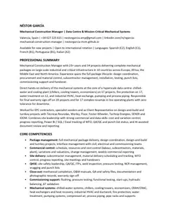
ATS
Mechanical Construction Manager
Full career record, 34 projects, data and AI tools.
Mechanical Construction Manager · Project Manager
Mechanical construction management for refineries, petrochemical, energy and renewable plants. Greenfield builds, revamps and turnarounds, from erection and piping to QA/QC, handover and package warranty.
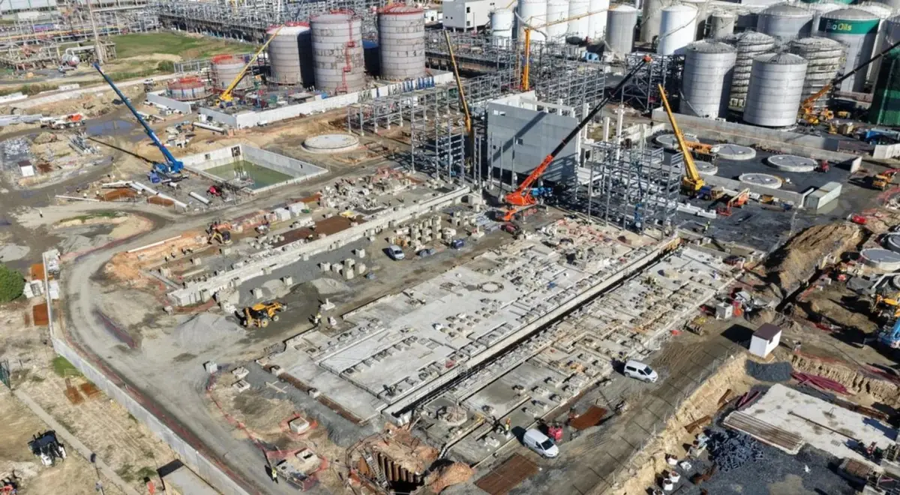
I manage mechanical construction on industrial plants: erection of static and rotating equipment, process piping, supports and structures, and the quality records that take a system from installation to handover.
My work covers greenfield plants and brownfield revamps in refining, petrochemicals, power generation, solar, waste to energy, biofuels and hydrogen. I have worked for contractors, for equipment vendors and on the owner's side as client representative, leading teams of more than 100 people.
From 2023 to 2025 I ran Sulzer Chemtech Tower Field Services jobs across Europe: mass-transfer column revamps, weld overlay and emergency repairs, certifying the work and signing five-year warranties. My most recent role was Mechanical Construction Manager on Moeve's SAF and HVO plant in Huelva.
I work to API, ASME and EN codes, with detailed reporting, written protocols and early planning so that problems are solved before they reach the critical path.
Languages
Certifications
2016Welded Construction Inspector, Level II2020Certified First Responder2023Mass Transfer Technologies (Sulzer)Education
2001Higher National Diploma in Computer Science – Database Management (Spanish “Técnico Superior”, EQF level 5) · CFP El Cabanyal, Valencia (1998–2001)Nine jobs with documented scope and figures, from the project records.
Four projects told slide by slide, as published on LinkedIn: scope, figures, photos from site and lessons learned.
Each bar starts in the project's first year and measures its net years. The colour shows the role.
Net years and number of projects by region and country.
Share of all projects that included each scope, material or system, with the net years accumulated on them.
Bar = share of projects. Figure = projects · net years.
The design and construction codes I work to, and the ones recorded on each documented project.
| Code | Family | Applied on documented projects | Projects |
|---|
Plant owners I have built for, sized by net years, and the companies that hired me.
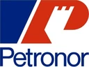
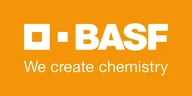
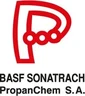
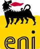
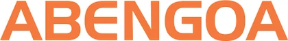
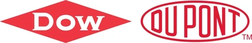
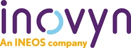
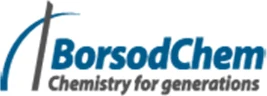
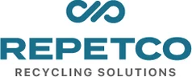
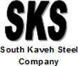
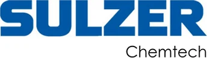
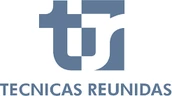
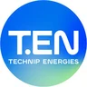
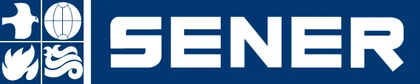
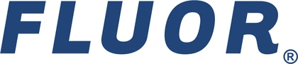
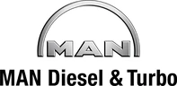
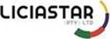
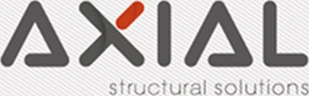
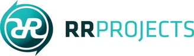
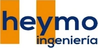
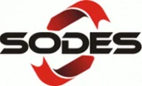
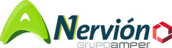
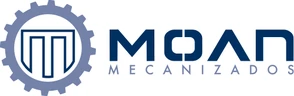
| Company | Highest role | Period | Projects | Years |
|---|
All projects, newest first. Open a row to read the scope.
Available for new projects as Mechanical Construction Manager, Construction Manager or Project Manager, in Spain or abroad, as employee or independent contractor.
Four versions of the same record. ATS versions are single-column and readable by applicant tracking systems; the designed versions are for reading.

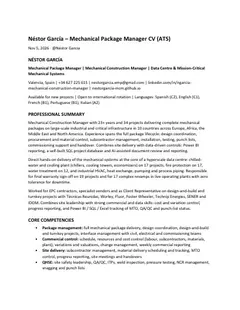
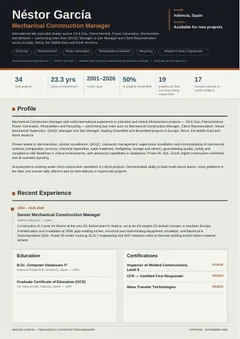
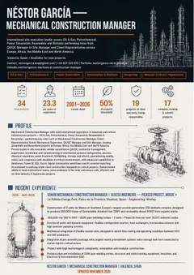